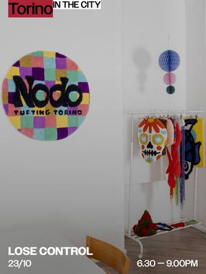
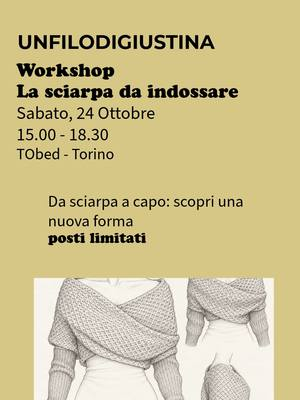
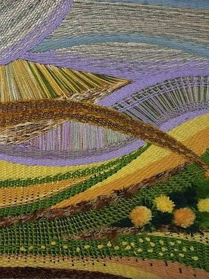
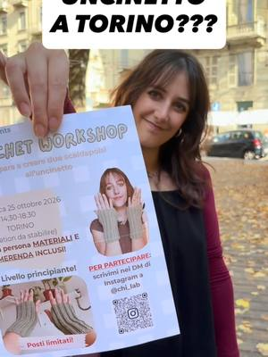
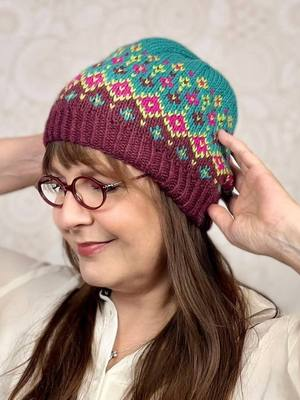

Sewing, knitting, crochet and embroidery courses in Turin
Sewing, knitting, crochet, embroidery, tufting, mending and sashiko courses and workshops in Turin and around.
Search all workshops68 activities coming up · updated on 23 October 2026

fri23octTextilesLose Control: a collective tufted rugFriday 23 OctoberVanchiglia (TO)with Nodo Tufting Torino with Chiara Allione from19octOtherDreamcatcher: weaving as meditationfrom Monday 19 October to Thursday 29 October, 19:00–21:00Santa Rita (TO)with Barbara Perga at Anima Atelier
from19octOtherDreamcatcher: weaving as meditationfrom Monday 19 October to Thursday 29 October, 19:00–21:00Santa Rita (TO)with Barbara Perga at Anima Atelier- sat24octTextilesCrochet and brunch: make a little bagSaturday 24 October, 09:30Borgo San Dalmazzo (CN)with Braccialettinicarini at Villa Teresa
 sat24octTextilesShibori and indigo: natural blue dyeingSaturday 24 October, 10:00–13:00San Donato (TO) · 55 €with Patrizia Berto (Startlap) at Orso Objetos
sat24octTextilesShibori and indigo: natural blue dyeingSaturday 24 October, 10:00–13:00San Donato (TO) · 55 €with Patrizia Berto (Startlap) at Orso Objetos sat24octTextilesSewing workshop: Shikaido skirtSaturday 24 October, 13:00–20:00San Salvario (TO)with OPEN 10125
sat24octTextilesSewing workshop: Shikaido skirtSaturday 24 October, 13:00–20:00San Salvario (TO)with OPEN 10125 sat24octTextilesEasy kimono: sew a yukatafrom Saturday 24 October to Sunday 25 October, 14:00–18:30Turin · 85 €with Favole di Seta
sat24octTextilesEasy kimono: sew a yukatafrom Saturday 24 October to Sunday 25 October, 14:00–18:30Turin · 85 €with Favole di Seta- sat24octTextilesTorino Social Knitting: knitting togetherSaturday 24 October, 15:00–19:00San Salvario (TO) · Freewith Torino Social Knitting

sat24octTextilesCrochet: the wearable scarfSaturday 24 October, 15:00–18:30Borgo Po (TO) · 85 € · sold outwith Un filo di Giustina at TObed
sat24octTextilesConnecting threads: fibre art on the loomSaturday 24 October, 17:30–19:30Nichelino (TO) · 35 €with Nikolinka Nikolova at Galleria Tempio della Luce- sun25octTextilesSewing ABC: basic stitches and hemsSunday 25 October, 10:00Rivarolo Canavese (TO) · 30 €with UnciPazzo with Eppi Lab

sun25octTextilesCrochet Workshop: wrist warmersSunday 25 October, 14:30–18:30Turin · 20 €with Chi Lab mon26octTextilesKnitting school: for beginnersMonday 26 October, 17:00–19:00San Salvario (TO) · 20 €with Raggomitolando
mon26octTextilesKnitting school: for beginnersMonday 26 October, 17:00–19:00San Salvario (TO) · 20 €with Raggomitolando- tue27octTextilesCrochet school: for beginnersTuesday 27 October, 17:00–19:00San Salvario (TO) · 20 €with Raggomitolando
- tue27octTextilesThe Bag Bar: a macramé handbagTuesday 27 October, 19:00–21:30Centro (TO) · 50 €with Aperi Pods
 from7octTextilesSocial sewing: evenings in the studiofrom Wednesday 7 October to Wednesday 25 November, every Wednesday, 19:00–21:00Turin · 14 € per eveningwith Favole di Seta
from7octTextilesSocial sewing: evenings in the studiofrom Wednesday 7 October to Wednesday 25 November, every Wednesday, 19:00–21:00Turin · 14 € per eveningwith Favole di Seta from14octTextilesAnde Neek Been: a tailoring coursefrom Wednesday 14 October to Wednesday 16 December, every Wednesday, 19:15–21:00Barriera di Milano (TO) · 80 €with Malick Niang (Baobab Couture) at Bagni Pubblici
from14octTextilesAnde Neek Been: a tailoring coursefrom Wednesday 14 October to Wednesday 16 December, every Wednesday, 19:15–21:00Barriera di Milano (TO) · 80 €with Malick Niang (Baobab Couture) at Bagni Pubblici- thu29octTextilesCrochet school: for beginnersThursday 29 October, 10:30–12:30San Salvario (TO) · 20 €with Raggomitolando

thu29octTextilesLiving in Colour: a Fair Isle knitted hatThursday 29 October, 18:00–20:00San Salvario (TO) · 35 €with Raggomitolando thu29octTextilesApericrochet: crochet necklacesThursday 29 October, 18:30Cit Turin (TO) · 20 €with Hobby della Nonna at Gastronomia L’Agenzia di Viaggi
thu29octTextilesApericrochet: crochet necklacesThursday 29 October, 18:30Cit Turin (TO) · 20 €with Hobby della Nonna at Gastronomia L’Agenzia di Viaggi sun1novTextilesTatreez: traditional Palestinian embroiderySunday 1 November, 10:30Aurora (TO) · 20 €with Lana Salameh at Jigeenyi
sun1novTextilesTatreez: traditional Palestinian embroiderySunday 1 November, 10:30Aurora (TO) · 20 €with Lana Salameh at Jigeenyi sun1novTextilesMending workshop: creative repairSunday 1 November, 15:00–17:00San Salvario (TO) · 30 €with orso.objetos at Emporium APS
sun1novTextilesMending workshop: creative repairSunday 1 November, 15:00–17:00San Salvario (TO) · 30 €with orso.objetos at Emporium APS from4novTextilesBasic tailoring: sewing coursefrom Wednesday 4 NovemberAurora (TO)with Modou at Jigeenyi
from4novTextilesBasic tailoring: sewing coursefrom Wednesday 4 NovemberAurora (TO)with Modou at Jigeenyi sat7novTextilesHand sewing lesson: hems and buttonsSaturday 7 NovemberTurin · 48 €with Favole di Seta
sat7novTextilesHand sewing lesson: hems and buttonsSaturday 7 NovemberTurin · 48 €with Favole di Seta sat7novTextilesIntroduction to sashiko: Japanese embroiderySaturday 7 November, 09:00–13:00Settimo Torinese (TO) · 30 €with Officina Sashiko di Studio Indaco
sat7novTextilesIntroduction to sashiko: Japanese embroiderySaturday 7 November, 09:00–13:00Settimo Torinese (TO) · 30 €with Officina Sashiko di Studio Indaco- sat7novTextilesSewing workshop: palazzo trousersSaturday 7 November, 13:00–20:00San Salvario (TO)with OPEN 10125
- sat7novTextilesEasy kimono: sew a yukatafrom Saturday 7 November to Sunday 8 November, 14:00–18:30Turin · 85 €with Favole di Seta
 sat7novTextilesEmbroidery workshop: decorate your knickersSaturday 7 November, 15:00–18:00Borgo Po (TO)with UnciPazzo at TObed
sat7novTextilesEmbroidery workshop: decorate your knickersSaturday 7 November, 15:00–18:00Borgo Po (TO)with UnciPazzo at TObed sun8novTextilesTricotin & Brunch: a knitted placematSunday 8 NovemberCentro (TO) · 49 €with Aperi Pods
sun8novTextilesTricotin & Brunch: a knitted placematSunday 8 NovemberCentro (TO) · 49 €with Aperi Pods sun8novTextilesKnit + breakfast: ribbed beanieSunday 8 November, 10:00–12:00Savigliano (CN) · 39 €with Merceria Taglia e Cuci
sun8novTextilesKnit + breakfast: ribbed beanieSunday 8 November, 10:00–12:00Savigliano (CN) · 39 €with Merceria Taglia e Cuci mon9novTextilesEmbroidery and breakfast: stitch togetherMonday 9 November, 10:30–12:00Borgo Po (TO)with CaroLab at TObed
mon9novTextilesEmbroidery and breakfast: stitch togetherMonday 9 November, 10:30–12:00Borgo Po (TO)with CaroLab at TObed- thu12novTextilesAperisferruzzo: a knit-and-chat eveningThursday 12 NovemberSan Salvario (TO) · Freewith Raggomitolando
 sat14novTextilesMacramé workshop: a hanging garlandSaturday 14 November, 14:30–18:30Villar Perosa (TO) · 40 €with Riflessi di Casa
sat14novTextilesMacramé workshop: a hanging garlandSaturday 14 November, 14:30–18:30Villar Perosa (TO) · 40 €with Riflessi di Casa- mon16novTextilesApericrochet: crochet necklacesMonday 16 November, 18:30Cit Turin (TO) · sold outwith Hobby della Nonna at Gastronomia L’Agenzia di Viaggi
 tue17novTextilesMacramé workshop: Christmas giftsTuesday 17 November, 18:30–20:30Vanchiglia (TO)with Nodo Tufting Torino
tue17novTextilesMacramé workshop: Christmas giftsTuesday 17 November, 18:30–20:30Vanchiglia (TO)with Nodo Tufting Torino- wed18novTextilesCrochet school: for beginnersWednesday 18 November, 10:30–12:30San Salvario (TO) · 20 €with Raggomitolando
- wed18novTextilesCrochet school: for beginnersWednesday 18 November, 17:00–19:00San Salvario (TO) · 20 €with Raggomitolando
- sat21novTextilesSewing workshop: a kimonoSaturday 21 November, 13:00–20:00San Salvario (TO)with OPEN 10125
 sat21novTextilesCardigan workshop: sewing with knitsfrom Saturday 21 November to Sunday 22 November, 14:00–18:30Turin · 85 €with Favole di Seta
sat21novTextilesCardigan workshop: sewing with knitsfrom Saturday 21 November to Sunday 22 November, 14:00–18:30Turin · 85 €with Favole di Seta sat21novTextilesFrom granny square to cardigan: crochetSaturday 21 November, 15:00–18:30Borgo Po (TO) · 50 € · sold outwith Un filo di Giustina at TObed
sat21novTextilesFrom granny square to cardigan: crochetSaturday 21 November, 15:00–18:30Borgo Po (TO) · 50 € · sold outwith Un filo di Giustina at TObed sun22novTextilesTricotin & Brunch: a knitted placematSunday 22 NovemberCentro (TO) · 49 €with Aperi Pods
sun22novTextilesTricotin & Brunch: a knitted placematSunday 22 NovemberCentro (TO) · 49 €with Aperi Pods sun22novTextilesShibori and indigo: natural blue dyeingSunday 22 November, 10:00–13:00San Donato (TO) · 55 €with Patrizia Berto (Startlap) at Orso Objetos
sun22novTextilesShibori and indigo: natural blue dyeingSunday 22 November, 10:00–13:00San Donato (TO) · 55 €with Patrizia Berto (Startlap) at Orso Objetos- tue24novTextilesKnitting school: for beginnersTuesday 24 November, 10:30–12:30San Salvario (TO) · 20 €with Raggomitolando
 wed25novTextilesClockwork KAL: Stephen West’s shawlWednesday 25 November, 18:00–20:00San Salvario (TO) · Freewith Raggomitolando
wed25novTextilesClockwork KAL: Stephen West’s shawlWednesday 25 November, 18:00–20:00San Salvario (TO) · Freewith Raggomitolando- thu26novTextilesKnitting school: for beginnersThursday 26 November, 17:00–19:00San Salvario (TO) · 20 €with Raggomitolando
 thu26novTextilesStitch Happens: embroidery eveningThursday 26 November, 19:00–21:30Aurora (TO) · 35 €with Ricamini Brutti at Velvet Truffle Riot
thu26novTextilesStitch Happens: embroidery eveningThursday 26 November, 19:00–21:30Aurora (TO) · 35 €with Ricamini Brutti at Velvet Truffle Riot- sat28novTextilesFull Immersion: crochet from scratchSaturday 28 November, 14:30–18:30Lingotto (TO) · 56 €with Un filo di Giustina
- sat16janTextilesOpen day: try a sewing machineSaturday 16 JanuarySan Salvario (TO)with OPEN 10125
- sat30janTextilesSewing workshop: trousers with pocketsSaturday 30 January, 13:00–20:00San Salvario (TO)with OPEN 10125
- sat20febTextilesSewing workshop: Sekai jacketSaturday 20 February, 13:00–20:00San Salvario (TO)with OPEN 10125
- sat20marTextilesSewing workshop: a dressSaturday 20 March, 13:00–20:00San Salvario (TO)with OPEN 10125
 dateof your choiceTextilesSewing course: from basics to your own clothesDate of your choiceSan Salvario (TO) · from 50 € per modulewith Albergo di Virtù Sartoria
dateof your choiceTextilesSewing course: from basics to your own clothesDate of your choiceSan Salvario (TO) · from 50 € per modulewith Albergo di Virtù Sartoria dateto be confirmedTextilesCraft Room: knitting and crochetDate to be confirmedMirafiori (TO)with Mihaela Mates at Casa nel Parco
dateto be confirmedTextilesCraft Room: knitting and crochetDate to be confirmedMirafiori (TO)with Mihaela Mates at Casa nel Parco- dateto be confirmedOtherCascina Roccafranca: this season’s coursesDate to be confirmedMirafiori (TO)with Cascina Roccafranca
- dateto be confirmedTextilesBeginner sewing course: from zero to hemsDate to be confirmedTurin · 48 €with Favole di Seta
 dateof your choiceOtherUpholstery and restyling: poufs and furnitureDate of your choiceBarriera di Milano (TO) · from 20 €with Magazzini Tessili
dateof your choiceOtherUpholstery and restyling: poufs and furnitureDate of your choiceBarriera di Milano (TO) · from 20 €with Magazzini Tessili dateof your choiceTextilesSewing workshops: clutch bags and kimonosDate of your choiceBarriera di Milano (TO) · from 50 €with Magazzini Tessili
dateof your choiceTextilesSewing workshops: clutch bags and kimonosDate of your choiceBarriera di Milano (TO) · from 50 €with Magazzini Tessili dateof your choiceTextilesTufting workshop: make your own rugDate of your choiceVanchiglia (TO) · from 80 €with Nodo Tufting Torino
dateof your choiceTextilesTufting workshop: make your own rugDate of your choiceVanchiglia (TO) · from 80 €with Nodo Tufting Torino- dateof your choiceTextilesPrivate lessons: knitting and crochetDate of your choiceSan Salvario (TO) · 24 € per lessonwith Raggomitolando
- dateof your choiceTextilesSewing lessons: pattern-making and tailoringDate of your choiceSan Salvario (TO)with Sassi
 dateof your choiceTextilesItalian fabrics: make a fabric necklaceDate of your choiceBorgo Po (TO) · 104 €with Club Joy
dateof your choiceTextilesItalian fabrics: make a fabric necklaceDate of your choiceBorgo Po (TO) · 104 €with Club Joy everyfriTextilesSashiko course: Japanese embroideryEvery Friday, 10:00–12:00San Donato (TO) · 30 € per sessionwith Orso Objetos
everyfriTextilesSashiko course: Japanese embroideryEvery Friday, 10:00–12:00San Donato (TO) · 30 € per sessionwith Orso Objetos everysatTextilesSewing course: patterns and dressmakingEvery Saturday, 14:30–17:30San Mauro Torinese (TO)with Caterina Scavo at upTOyou
everysatTextilesSewing course: patterns and dressmakingEvery Saturday, 14:30–17:30San Mauro Torinese (TO)with Caterina Scavo at upTOyou everywedTextilesStitch and chat: a weekly knitting circleEvery Wednesday, 15:00San Salvario (TO)with Casa del Quartiere di San Salvario
everywedTextilesStitch and chat: a weekly knitting circleEvery Wednesday, 15:00San Salvario (TO)with Casa del Quartiere di San Salvario dateof your choiceTextilesEmbroidery group: mending and sashikoEvery two weeks, 15:30–17:30San Donato (TO)with orso.objetos at Più SpazioQuattro
dateof your choiceTextilesEmbroidery group: mending and sashikoEvery two weeks, 15:30–17:30San Donato (TO)with orso.objetos at Più SpazioQuattro everythuTextilesCrochet Cafè: crochet for everyoneEvery Thursday, 18:00–20:00Aurora (TO) · Freewith Ristoro
everythuTextilesCrochet Cafè: crochet for everyoneEvery Thursday, 18:00–20:00Aurora (TO) · Freewith Ristoro everymonTextilesCreative mending course: visible mendingEvery Monday, 18:30–20:30San Donato (TO) · 30 € per sessionwith Orso Objetos
everymonTextilesCreative mending course: visible mendingEvery Monday, 18:30–20:30San Donato (TO) · 30 € per sessionwith Orso Objetos everytueTextilesSashiko course: Japanese embroideryEvery Tuesday, 18:30–20:30San Donato (TO) · 30 € per sessionwith Orso Objetos
everytueTextilesSashiko course: Japanese embroideryEvery Tuesday, 18:30–20:30San Donato (TO) · 30 € per sessionwith Orso Objetos everywedTextilesThe thread that binds: crochet courseEvery Wednesday, 19:00San Mauro Torinese (TO)with Tiziana Boccalatte at upTOyou
everywedTextilesThe thread that binds: crochet courseEvery Wednesday, 19:00San Mauro Torinese (TO)with Tiziana Boccalatte at upTOyou